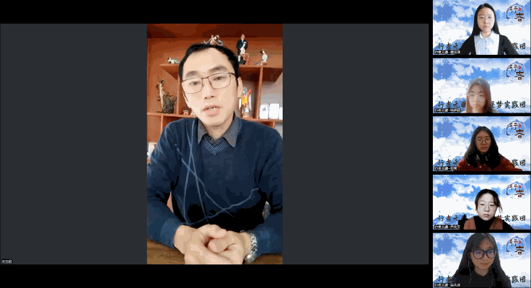
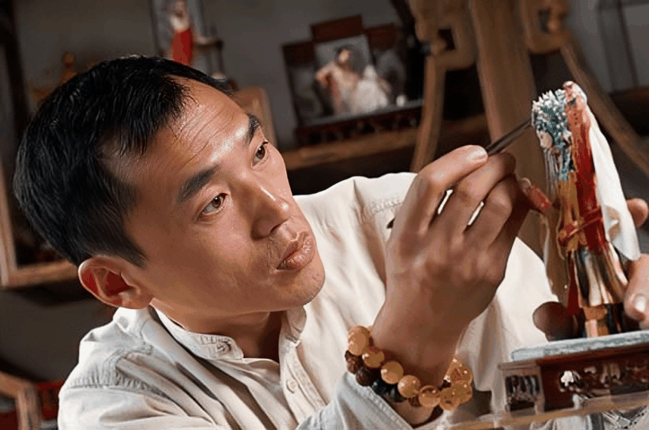
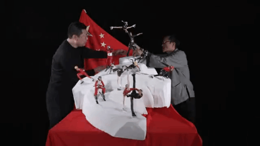

走近工匠故事，品味冰雪气韵
缘起面塑，追根溯源探民俗传统；
冰雪英雄，重现创作读冬奥精神。

采访匠人刘吉程先生
一上午的采访交流，让行者们为前辈的工匠精神所折服，今天对刘吉程先生的采访，加深了我们对面塑文化的了解，也激发了我们对面塑文化的浓厚兴趣，对其背后承载的文化有了更深入的关注。刘先生对于《冰雪英雄》这一作品创作过程的解读，也让我们进一步了解冰雪文化，感受迎难而上、追求卓越的冬奥精神。

刘吉程先生
冰雪英雄

《冰雪英雄》
从1992年叶乔波打破中国冬奥0的突破，到新时代运动员谷爱凌代表中国出战，历时20天，创造了《冰雪英雄》这一优秀的作品，让世界各国领略到了中国冰雪英雄的风采。刘先生也正是在了解了冰雪运动员们的艰苦训练，把所有的青春奉献在训练场和赛场上，为国家取得荣誉的事迹后，用面塑的艺术来表达对运动员们的敬意，并希望能够将他们这种迎难而上、追求卓越的冬奥精神进行传递。
冰雪是气韵，更是品格
雕刻凿琢的是故事，更是人生
在今天的实践活动中
我们一同品味大国工匠创作与初心
浓厚的才思与纯粹的热爱邂逅
灿烂的面塑艺术与冰雪运动碰撞
更是激起了行者们对民俗文化和冰雪精神的珍视
行者们将本着追根溯源的本心，
将面塑文化、冰雪精神进行传播！
来源 | 行者无疆实践团
图片 | 行者无疆实践团
图片 | 部分来源于网络
文字 | 崔雨琪
排版 | 张霖茜
审核 | 周奕彤 崔雨琪

行
者
这个冬天我们一起踏冰逐梦！